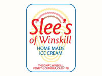
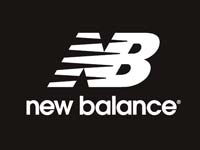
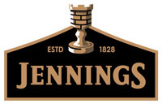
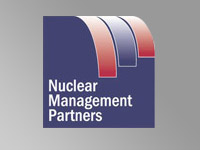
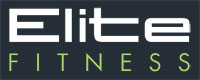

Success Stories
From bottled water companies and healthcare providers to international energy giants - Invest in Cumbria has helped scores of businesses make one of Britain's most vibrant and diverse business destinations their home.
We have worked closely with home grown businesses such as Stobart Group, M-Sport and BAE Systems to ensure they, and businesses within their supply chains, continue to prosper in Cumbria. We have helped the likes of Neuro Partners, who specialises in brain injury and neurological based treatment and therapy, to set up an office in Carlisle. The company has created more than 100 jobs in Cumbria and, with a little help through our after care programme, continue to go from strength-to-strength by announcing plans to create another 40 to 60 jobs in the County by extending the care services it provides.
Slee's of Winskill, Home made ice cream

Slee's of Winskill is a name many Cumbrian's know. They have been serving ice cream to the local communities for over 75 years with from their distinctive Ice Cream Vans.
David Rackham met with Big Cumbria advisor John Nelmes recently as he wanted to know more about the project and was interested in how technology could help his business.
During the Initial Diagnostic meeting with us, they discussed different aspect of marketing and how to harness the power of the internet to inform as many people as possible about when and where the ice cream vans were going. David also needed a system of informing customer in case a van is delayed.
This problem brought John onto the subject of social media, how about letting customers track your vans online? Discussing this further, they came up with a plan to possibly setup a Twitter account that would have tweets automatically created when he vans entered a certain area. This system would be cheap to setup and would need a mobile phone on the van that had GPS capabilities.
John is to research possible solutions, looking at an automatic system and a manual system of Tweeting locations. He will also look at how complicated a live tracking map would be to publish to the internet and if there are services already available that can do this.
Mr. Rackham is now awaiting the second appointment with Big Cumbria, due to happen in early July, to see what different solutions are available and getting them up and running.
New Balance

British Manufacturing is alive and well and flourishing in New Balance's Flimby factory.
The factory employs more than 200 people and makes over 1.2 million pairs of quality running and fitness shoes a year and exports them to 58 countries, and despite the recession, New Balance's UK output increased a sizeable 20% in 2010 from the previous year.
This is in part due to the incorporation of LEAN manufacturing to enhance traditional skills of cutting, lasting, stitching and embroidering which has led to increased output and a long term sustainable future for the only premium priced athletic footwear brand that continues domestic manufacturing.
"As the global market continues to dismantle the barriers of world trade immense and complex challenges are thrown down," commented John Wilson, Exec. V.P. Manufacturing for New Balance, "yet, in this brave new world of continued economic integration and increasingly aggressive competition we are justifiably proud of our company's progress and performance, the outstanding contribution of our workforce and our unique vision of manufacturing in Britain."
Domestic manufacturing also offers New Balance the advantage of being flexible enough to meet customer demands. Here, the ability to replenish stocks in season on short lead times is fast becoming an integral part of the survival kit for High Street retailers.
The "Made in England" cachet, coupled with product quality and manufacturing flexibility has provided remarkable export successes, too, - significant examples being Japan and Italy where considerable market penetration has been achieved.
New Balance came to Cumbria 28 years ago because of the history of shoe making in West Cumbria. New Balance realised the challenge of a manufacturing location an hour from the motorway network, but was also quick to recognise a strong work ethic, a well-tested skill base, commitment, dedication and the enterprising ethos and high standards of the people in the local community.
The factory has just achieved an ISO9001 accreditation and has also won the Queen's Award for Enterprise. The constant drive for greater efficiency and productivity fosters a close relationship between the management and the workforce and factory absentee rates are less than three per cent and staff turnover remains significantly low.
Jenning's Brewery

British Manufacturing is alive and well and flourishing in New Balance's Flimby factory.
Pure water found only where the Rivers Cocker and Derwent meet is responsible for the unique flavour of the beer produced at the Jennings Brewery in Cockermouth, but it was also almost its undoing when the catastrophic floods of 2009 closed the brewery and threatened its continued existence on the site.
Jennings is owned by Marstons Brewing Company and they faced a massive bill for returning the brewery to production once the floods had subsided. But it is a tribute to the Cumbrian people as much as to the Cumbrian water that the brewery survived and is back in full production of beers that taste as good as ever.
Brewery manager Gaynor Green recalls the line six feet up the wall which marked the height of the flood waters on 19 November 2009, and arriving at the brewery to find the ground floor flood water waist-high, and vehicles in the car park bobbing around like corks.
Gaynor is full of praise for her workforce.
"They got stuck in as soon as it was safe and set about cleaning up the mess. We got the phone lines back up within a week and the telephone sales girls were able to start moving beer again."
Finally in February 2010 the brewery was back in production.
Jennings Brewery has been in its present location since 1874, overlooked by Cockermouth Castle and drawing its distinctively pure water from the same source that supplied the castle well for centuries. The brewery is capable of producing 50,000 barrels a year and supplies 50 of its own pubs in Cumbria as well as other pubs in the Marston's chain in the North-east, Lancashire and Yorkshire, plus a large free trade and bottling business.
Gaynor Green always maintained there was no question of Jennings closing for good, and she received the full backing of Stephen Oliver, boss of Marston's Brewing Company. Jennings beers were brewed briefly at Marstons' facilities in Wolverhampton and Burton-on-Trent, but ale aficionados maintained it didn't taste the same.
There was, of course, never any attempt to pass the beers off as genuine Jennings brews; special attachments clipped to hand pumps in pubs explained why the beers were being brewed elsewhere. What's more 10 pence from every pint sold went to the flood relief fund, which raised almost £180,000 and made up the biggest single contribution to the fund.
PacTec
PacTec is the industry leader in the design and manufacture of innovative "soft sided" packaging and associated waste management solutions for the nuclear, transportation and hazardous waste industries.
PacTec EPS Ltd is the UK-based company developed from the success of the parent company PacTec Inc in the USA. It opened its first UK office at Westlakes Science and Technology Park in West Cumbria in April 2010, and chose Cumbria because it offered a unique affinity for nuclear industries.
Business Development Manager Liz Bowe explains: "Westlakes Science Park was chosen by PacTec as it was seen to be a centre of excellence for a number of key nuclear companies. The other key element was the development of the Energy Coast, and the opportunities that it offers in working with key stakeholders to set standards for the nuclear sector.
"We intend to use this office to develop business not only within the UK but across Europe where there are further nuclear and hazardous waste opportunities."
She adds:
"Opening the office in Cumbria is one of the key steps in the commitment for PacTec that sends the message to the UK nuclear and hazardous waste industry that we are open for business and are ready to work with the supply chain to develop new ideas that will 'add value' to the existing UK waste packaging capability."
PacTec products have already been taken up for use by nuclear facilities within the UK and the company is also looking at opportunities in the oil and gas industry. PacTec is currently working with the Low Level Waste Repository Ltd in Cumbria - the UK's national low level radioactive waste disposal facility - and a number of potential consigners to establish UK Industrial Packaging designs of the PacTec LiftPac, a patented lift bag designed primarily for safe and efficient packaging and disposal of radioactive and hazardous waste.
Studsvik
STUDSVIK UK opened its Metals Recycling Facility (MRF) near Workington, in September 2009 to offer the nuclear industry a cost-effective, safe and sustainable alternative to the disposal of low-level waste in the Low Level Waste Repository (LLWR) in West Cumbria.
The site, at Joseph Noble Road on the Lillyhall Industrial Estate was chosen because of its proximity to Sellafield, the LLWR and Workington Port, and its good road and rail links. The workforce and local community are also extremely conversant with the needs of - and issues surrounding - the nuclear industry, and Studsvik has worked closely with them to establish the operation in Workington.
The Studsvik facility is the first new nuclear licensed site in the country for more than two decades, and implements the Government's 'waste hierarchy' by offering the nuclear industry a pragmatic way of dealing with the estimated 500,000 tonnes of low-level waste currently stored at assorted nuclear sites. The metal is decontaminated by using a standard industrial dry-blasting process.
Complementary to West Cumbria's 'Energy Coast' vision, the Metals Recycling Facility has already injected millions of pounds into the local economy via its construction, employment of 20 people and ongoing recycling operations. In the last 15 months the facility has successfully treated low-level waste from nine different sites in the UK with average volume reductions of 24:1, leaving just 4.1 per cent of the low level waste to be disposed of safely.
"A variety of scrap metals previously destined for the LLWR has had its low-level radioactivity safely removed, enabling a valuable resource to be recycled whilst prolonging the life expectancy of the LLWR," explained Mike McMullen, MRF manager.
Studsvik is committed to sustaining a positive contribution within the local area. The company is involved in several community initiatives, including the sponsorship of Workington Cricket Club and membership of Cumbria Wildlife Trust. It recently opened a viewing gallery at the MRF for local primary school children to see and learn about metal recycling.
At Britain's Energy Coast Business Cluster Business Awards in 2010, Studsvik's MRF won the Sustainability Award and the company is the recipient of several health and safety awards.
Nuclear Management Partners

Nuclear Management Partners (NMP) is a consortium of the world's leading nuclear industry experts which in 2008 was awarded the contract by the Nuclear Decommissioning Authority to oversee the management, operations and clean up of the Sellafield site working through its wholly-owned company, Sellafield Ltd.
The contract has been awarded for an initial period of five years with the option of a further 12 years and a total potential value of £22 billion. It has been compared on a financial scale with the 2012 London Olympics, and will have a massive impact on both Sellafield's operations and on West Cumbria's social fabric and its economy for the next 50 years.
Nuclear Management Partners has committed up to £20m in its first five years to fund socio-economic projects and this will be administered through Britain's Energy Coast Board, together with another £500,000 per year to be administered through the Cumbria Community Foundation. During the floods in 2009 NMP acted quickly with its partners to play an instrumental role in providing immediate help and supporting the subsequent recovery of areas affected.
The consortium comprises three companies: URS, which manages more U.S. government nuclear clean up projects and sites than any other company; AMEC, the leading international nuclear engineering and project management company; and Areva, which operates the French nuclear power programme--the industry's model.
Based on the Westlakes Science Park in Cumbria, Nuclear Management Partners also operates sites at Capenhurst in Cheshire, and engineering, design and functional support capability are also provided by employees based at offices at Risley, near Warrington
NMP's primary focus is on making Sellafield safer, cleaner, more productive, and more cost effective.
Elite Fitness

Big Cumbria Advisor John Nelmes met with Steven Sharkey of Elite Fitness at the beginning of the project. He was initially skeptical of another business support project and didn’t believe we could offer him any new advice.
Within 10 minutes of the Initial Diagnostic meeting, Steven became very animated as John told him about what we could do, in particular the advice we could offer on how to start setting up an online shop.
The rest of the first appointment was mainly Steven thinking out loud on what he needed to do to be able to sell his services and products online, from delivery methods and costs to the actual implementation of the shopping cart and ordering process on the website.
With John’s guidance, Steven was able to set up a fully working online shop, with stock management, email notifications, automatic delivery cost calculation and more within 2 months of the first meeting.
Cumbria Neuro Partners
Neuro Partners delivers personalized support packages to meet the needs of individuals affected by neurological conditions such as Multiple Sclerosis, Parkinson's disease, muscular dystrophy, Huntingdon's disease, as well as assisting clients with learning disabilities, autism, mental health issues, spinal injury and brain injury.
The company prides itself on applying a completely individualised package of support, as no two cases are the same.
The 3 founder members initially created Neuro Partners after identifying a gap in the services offered to seriously injured individuals after they left hospital. Originally it was predominantly a brain injury service, but has expanded into other areas where it can support clients and their families. All support packages are designed to meet the pre-assessed needs of the individual, whether these are community support, rehabilitation support, independent living skills, or employment based support. Neuro Partners also works with families to ensure they are included and valued as part of the process.
Since its creation in 2006 the company has expanded to over 250 employees, with a wealth of experience ranging across neuro psychology, occupational psychology, nursing, rehabilitation, care, education, physiotherapy and many more professions, being viewed as experts in putting care packages together for the most complex of needs.
Neuro Partners opened an office in Carlisle during 2008 in response to specific requirements for support across Cumbria, and received assistance from Invest in Cumbria in locating premises and recruiting staff. Neuro Partners was initially engaged in a partnership with the Primary Care Trust to establish bespoke services, but has now expanded across the region and already employs over 100 people in Cumbria. The company plans further expansion during 2011 which will see its workforce increase by around 70%.